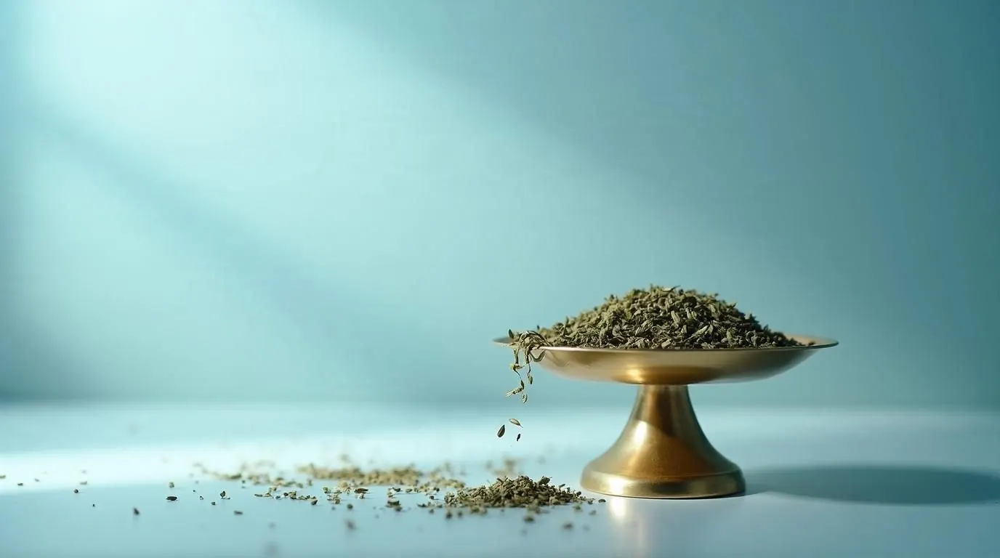

한약을 먹는 중에 내시경, 발치, 수술 같은 일정이 잡혔다면 시술하는 병원에 한약 복용 사실을 먼저 알리고, 그 병원의 안내에 맞춰 쉬는 시기와 다시 먹는 시기를 한의원과 함께 정하는 것이 순서입니다.
여쭙는 것
- 어떤 검사나 시술인가요? 위내시경, 대장내시경, 발치, 임플란트, 전신 마취 수술…
- 날짜와 시각이 정해졌나요? 오전 검사인지 오후 검사인지도 알려 주세요.
- 시술하는 병원에서 받은 안내문이 있나요? 금식 시작 시각, 먹으면 안 되는 약 목록…
생활에서 해 볼 것
- 일정이 잡힌 날: 시술 병원 예약 담당자나 의료진에게 "한약을 먹고 있다"고 한 문…
- 같은 날 저녁: 좋은꿈참사랑한의원에 전화(02-815-7510)로 시술 종류와 날짜…
- 시술 일주일 전쯤: 시술 병원에서 받은 안내문을 다시 읽고, 약을 쉬어야 하는 날짜…
한의원에서 함께 살필 것
- 시술 일정 때문에 한약을 쉬어야 하는지, 언제까지 쉬어야 하는지 정리가 필요한 경우
- 시술 뒤 다시 한약을 이어 먹어도 될지, 처방을 다시 살펴야 할지 궁금한 경우
- 시술 뒤 입맛, 소화, 잠, 기력이 평소와 달라져 생활을 어떻게 이어 갈지 상담이…
먼저 확인이 필요한 신호
- 시술 부위에서 피가 계속 나거나 다시 나기 시작하는 경우
- 시술 뒤 38도 이상의 열이 나거나 붓기와 통증이 점점 심해지는 경우
- 내시경 뒤 배가 점점 단단해지며 심하게 아프거나 검은 변, 피가 섞인 변이 보이는 경우
한약을 먹는 동안 건강검진 내시경, 사랑니 발치나 임플란트 같은 치과 치료, 계획된 수술 일정이 잡히는 일은 생각보다 자주 있습니다. 이때 가장 먼저 할 일은 시술하는 병원에 "지금 한약을 먹고 있다"는 사실을 알리고, 그 병원에서 주는 금식·약 복용 안내를 우선으로 따르는 것입니다. 그다음 좋은꿈참사랑한의원에 일정과 안내받은 내용을 알려 주시면, 남은 한약을 언제 쉬고 언제 다시 이어 먹을지, 쉬는 동안 남은 봉지는 어떻게 보관할지를 함께 정합니다. 스스로 판단해 그냥 계속 먹거나, 반대로 아무 연락 없이 한 달씩 미뤄 두기보다는 두 곳에 각각 한 번씩 알리는 것이 가장 단순하고 안전한 방법입니다.
왜 미리 알려야 하나요
- 내시경, 대장 검사, 수술 전에는 정해진 시간부터 물을 포함해 아무것도 먹지 않도록 안내받는 경우가 많습니다. 한약도 마시는 액체이므로 이 금식 시간 안에 들어가면 검사 준비가 흐트러질 수 있습니다.
- 대장내시경 전에는 장을 비우는 약을 먹고 며칠 동안 식사 종류도 제한합니다. 색이 진한 한약이 장 안에 남으면 관찰에 방해가 될 수 있어 검사 병원에서 언제부터 쉬라고 할지 확인이 필요합니다.
- 치과 발치나 수술처럼 피가 나는 시술에서는 출혈과 지혈에 영향을 줄 수 있는 약, 영양제, 한약을 미리 묻는 경우가 많습니다. 한약에 들어가는 약재의 구성은 처방마다 달라 시술하는 쪽에서 판단할 수 있도록 알려 드리는 것이 좋습니다.
- 마취나 진정 약을 쓰는 검사는 그 전후로 먹는 것에 대한 기준이 따로 있습니다. 한약이 이 기준과 겹치는지 시술하는 병원이 알고 있어야 안내가 정확해집니다.
- 시술 뒤에는 입안 상처, 속쓰림, 장이 예민해진 상태 등으로 평소처럼 한약을 마시기 어려운 날이 생길 수 있습니다. 다시 먹는 시기를 미리 정해 두면 남은 한약을 버리거나 서둘러 몰아 먹는 일을 줄일 수 있습니다.
- 한약을 처방할 때는 몸 전체의 리듬과 그 시기의 생활을 함께 보고 정합니다. 큰 시술을 앞뒤로 몸 상태가 달라지면 같은 처방을 그대로 이어 갈지, 잠시 쉬었다가 다시 살필지를 한의원에서 다시 볼 필요가 있습니다.

먼저 이렇게 여쭙니다
- 어떤 검사나 시술인가요? 위내시경, 대장내시경, 발치, 임플란트, 전신 마취 수술 중 어디에 가까운가요?
- 날짜와 시각이 정해졌나요? 오전 검사인지 오후 검사인지도 알려 주세요.
- 시술하는 병원에서 받은 안내문이 있나요? 금식 시작 시각, 먹으면 안 되는 약 목록이 적혀 있다면 사진으로 가져오셔도 됩니다.
- 그 병원에 한약을 먹고 있다는 사실을 이미 말씀하셨나요? 말씀하셨다면 어떤 답을 들으셨나요?
- 지금 한약은 하루 몇 번 드시고, 남은 봉지는 몇 개쯤인가요?
- 한약 외에 혈압약, 당뇨약, 혈액을 묽게 하는 약, 영양제를 함께 드시나요?
- 최근 한약을 먹으면서 속이 불편하거나 변이 묽어진 날이 있었나요?
- 시술 뒤 며칠 동안 식사를 제한하라는 안내를 받으셨나요?
- 지난번 상담에서 정했던 복용 방법이 지금도 잘 지켜지고 있는지 이어서 여쭙니다.
일상에서 먼저 해 볼 수 있는 것
아래 순서는 시술 날짜가 잡힌 날부터 시술 뒤 다시 한약을 이어 먹기까지의 흐름을 기준으로 적었습니다. 시술하는 병원에서 다른 안내를 받았다면 그 안내가 먼저입니다.
- 일정이 잡힌 날: 시술 병원 예약 담당자나 의료진에게 "한약을 먹고 있다"고 한 문장으로 알립니다. 한약 봉지 겉면이나 처방 안내지를 사진으로 찍어 두면 질문을 받았을 때 바로 보여 드릴 수 있습니다.
- 같은 날 저녁: 좋은꿈참사랑한의원에 전화(02-815-7510)로 시술 종류와 날짜를 알려 주세요. 남은 봉지 수를 세어 두시면 통화가 짧아집니다.
- 시술 일주일 전쯤: 시술 병원에서 받은 안내문을 다시 읽고, 약을 쉬어야 하는 날짜가 있다면 달력에 표시합니다. 한약을 쉬는 날짜도 같은 달력에 함께 적습니다.
- 한약을 쉬기 시작하는 날: 남은 한약 봉지는 냉장 보관을 유지하고, 상자에 "○일부터 쉼"이라고 메모를 붙여 두면 가족이 모르고 데워 드리는 일을 막을 수 있습니다.
- 시술 전날: 안내받은 금식 시작 시각을 휴대폰 알람으로 맞춥니다. 저녁 한약을 먹던 분이라도 금식 시각 이후라면 드시지 않습니다.
- 시술 당일: 진정이나 마취를 한 경우 그날은 운전과 중요한 결정을 피하고, 식사는 병원에서 안내한 시각부터 물, 미음, 부드러운 죽 순으로 천천히 시작합니다.
- 시술 다음 날부터: 입안 상처가 있거나 속이 예민하면 따뜻한 물과 부드러운 식사로 하루 이틀 몸을 먼저 살핍니다. 한약을 다시 먹는 시점은 한의원과 정한 날짜를 따르고, 정하지 못했다면 전화로 다시 확인해 주세요.
- 다시 먹기 시작한 첫날: 평소 양을 그대로 드시되 식사 직후 바로보다는 30분쯤 지나 드시는 편이 속이 편한 분이 많습니다. 첫 이틀은 변 상태와 속 편안함을 짧게 메모합니다.

상황별 예시
예를 들어 다음 주 오전에 위내시경과 대장내시경을 함께 받기로 한 경우를 생각해 보겠습니다. 대장 검사를 위해 며칠 전부터 식사 종류를 바꾸고 전날 저녁부터 장을 비우는 약을 먹게 되므로, 한약도 검사 병원에서 정한 시작 시점부터 함께 쉬는 경우가 많습니다. 검사 뒤 첫 끼는 부드러운 음식으로 시작하고, 장이 평소 리듬을 찾는 하루 이틀을 지켜본 다음 한약을 다시 이어 가는 순서를 상담에서 함께 정합니다.
예를 들어 사랑니를 빼기로 한 경우에는 치과에서 출혈과 관련된 약을 묻는 경우가 많습니다. 한약 처방 안내지를 보여 드리고 치과의 의견을 들은 뒤 한의원에 알려 주시면, 발치 전후 며칠을 쉬어야 하는지, 입안 상처가 아물 때까지 따뜻한 한약을 어떤 온도로 드시면 좋은지를 함께 살핍니다. 발치 뒤에는 너무 뜨거운 음료가 상처를 자극할 수 있어 미지근하게 식혀 드시는 편이 무난합니다.
예를 들어 몇 주 뒤 무릎이나 어깨 수술이 계획된 경우에는 수술 병원의 수술 전 검사와 마취과 상담에서 먹고 있는 모든 약과 한약을 정리해 말씀하시는 것이 중요합니다. 수술 뒤에는 회복 과정과 처방받은 약이 우선이므로, 한약은 수술 병원의 약 복용이 안정된 뒤 다시 상담해 새로 정하는 편이 많습니다. 이때는 수술 전 처방을 그대로 이어 먹기보다 달라진 몸 상태를 다시 진맥하고 살피는 것이 순서입니다.
예를 들어 건강검진에서 위내시경만 받는 경우에는 전날 저녁 이후 금식만 지키면 되는 경우도 있습니다. 그래도 검사 당일 아침에 습관처럼 한약을 데워 드시는 일이 생기지 않도록, 전날 밤 냉장고 한약 상자에 메모를 붙여 두시면 좋습니다.
자주 하시는 오해
- 한약은 자연에서 온 약재라서 시술과 상관없다고 생각하시는 분이 있습니다. 하지만 한약도 몸에 작용하는 약이므로 시술하는 병원에서는 알고 있어야 판단할 수 있습니다.
- 한 번이라도 쉬면 그동안 먹은 한약이 소용없어진다고 걱정하시는 분도 있습니다. 시술 때문에 며칠 쉬는 일은 흔하고, 다시 이어 먹는 시점과 방법을 정하면 됩니다.
- 남은 한약을 시술 전에 서둘러 몰아서 드시는 분도 있는데, 하루 양을 늘리는 것은 속을 불편하게 할 수 있어 권하지 않습니다.
- 시술 병원에 말하면 시술을 미뤄야 할까 봐 숨기는 경우도 있습니다. 알려 드려야 병원이 상황에 맞게 안내할 수 있고, 대부분은 쉬는 시기를 정하는 것으로 정리됩니다.

스스로 점검해 보세요
- 시술하는 병원에 한약을 먹고 있다고 아직 말하지 않았다.
- 시술 전 금식 시작 시각을 정확히 모른다.
- 한약 외에 혈액을 묽게 하는 약이나 영양제를 함께 먹고 있다.
- 남은 한약 봉지 수를 세어 보지 않았다.
- 한약을 쉬는 날짜와 다시 먹는 날짜를 정하지 않았다.
- 가족이 아침마다 한약을 데워 주는데 쉬는 날짜를 알리지 않았다.
- 시술 뒤 식사 제한 기간이 있는지 확인하지 않았다.
- 최근 한약을 먹으며 속쓰림이나 묽은 변이 있었다.
위 항목 중 두 가지 이상에 해당한다면 시술 병원과 한의원에 각각 한 번씩 연락해 정리해 두시는 것이 좋습니다.
한의원에서 함께 살필 수 있는 경우
- 시술 일정 때문에 한약을 쉬어야 하는지, 언제까지 쉬어야 하는지 정리가 필요한 경우
- 시술 뒤 다시 한약을 이어 먹어도 될지, 처방을 다시 살펴야 할지 궁금한 경우
- 시술 뒤 입맛, 소화, 잠, 기력이 평소와 달라져 생활을 어떻게 이어 갈지 상담이 필요한 경우
- 수술 뒤 회복 과정에서 몸이 무겁고 쉽게 지치는 느낌이 이어지는 경우
- 쉬는 동안 남은 한약의 보관과 사용 기간이 걱정되는 경우
좋은꿈참사랑한의원에서는 시술 이후 다시 방문하시면 먼저 어떤 시술을 받았는지, 병원에서 어떤 약을 받았고 어떻게 드시고 있는지, 식사와 잠, 변이 어떻게 달라졌는지를 차례로 여쭙니다. 그다음 모든 분께 진맥을 하며 시술 전과 비교해 몸 전체의 리듬이 어떻게 바뀌었는지 살피고, 필요하면 혀와 배의 상태도 함께 봅니다. 지난번 처방과 그때 나눈 이야기를 이어서 확인한 뒤, 남은 한약을 그대로 이어 먹을지, 잠시 더 쉴지, 새로 살펴 정할지를 설명드립니다. 한약은 원내에서 탕전하고, 들어가는 약재는 이종호 대표원장이 직접 검수합니다. 이종호 대표원장을 비롯해 조영기 원장, 정원영 원장이 같은 흐름으로 진료합니다.

지켜볼 기준과 바로 진료가 필요한 신호
- 시술 뒤 다시 한약을 먹기 시작한 첫 2~3일 동안 속쓰림, 묽은 변, 입안 상처의 따가움이 늘지 않는지 살펴봅니다.
- 이틀 넘게 속이 불편하거나 변이 계속 묽다면 한약을 멈추고 한의원에 전화로 알려 주세요.
- 수술 병원에서 받은 약을 먹는 기간에는 그 약의 복용이 우선이며, 한약을 함께 먹어도 되는지는 두 곳 모두에 확인합니다.
- 시술 부위에서 피가 멈추지 않거나, 열이 나고 붓기가 심해지거나, 검은 변이나 피가 섞인 변이 보인다면 한약 여부와 관계없이 시술한 병원에 바로 연락하세요.
이렇게 기록해 오시면 상담이 쉬워집니다
- 시술 종류, 날짜, 시술 병원에서 받은 안내문 사진
- 한약을 마지막으로 먹은 날과 다시 먹기 시작한 날
- 시술 뒤 병원에서 받은 약의 이름과 복용 기간
- 시술 뒤 식사를 다시 시작한 순서와 그때 속의 느낌
- 시술 뒤 변, 잠, 기력의 변화를 하루 한 줄씩
- 남은 한약 봉지 수와 보관 방법

이런 증상은 먼저 확인이 필요합니다
- 시술 부위에서 피가 계속 나거나 다시 나기 시작하는 경우
- 시술 뒤 38도 이상의 열이 나거나 붓기와 통증이 점점 심해지는 경우
- 내시경 뒤 배가 점점 단단해지며 심하게 아프거나 검은 변, 피가 섞인 변이 보이는 경우
- 숨이 차거나 가슴이 답답하고, 두드러기나 입술 붓기가 생기는 경우
- 수술 뒤 한쪽 다리가 붓고 아프거나 갑자기 숨이 가빠지는 경우
이런 신호가 있다면 한약 복용 여부와 관계없이 시술한 병원이나 응급실에서 먼저 확인하세요. 시술 병원에서 처방받은 약이나 평소 복용 중인 약은 처방한 의사와 상의 없이 줄이거나 끊지 않습니다. 숨쉬기 어렵거나 의식이 흐려지는 등 급한 상황이라면 119에 바로 연락하세요.
함께 읽으면 좋은 글
- 한약을 먹기 전에 한의원에 꼭 알려야 하는 것은 무엇인가요?
- 한약을 먹는 동안 양약과 음식은 어떻게 알려 주면 되나요?
- 수면내시경을 받은 뒤 속이 더부룩할 때 식사는 어떻게 다시 시작하나요?
한눈에 보는 표
| 구분 | 핵심 |
|---|---|
| 여쭙는 것 | 어떤 검사나 시술인가요? 위내시경, 대장내시경, 발치, 임플란트, 전신 마취 수술 중 어디에 가까운가요? 날짜와 시각이 정해졌나요? 오전 검사인지 오후 검사인지도 알려 주세요. |
| 생활에서 해 볼 것 | 일정이 잡힌 날: 시술 병원 예약 담당자나 의료진에게 "한약을 먹고 있다"고 한 문장으로 알립니다. 한약 봉지 겉면이나 처방 안내지를 사진으로 찍어 두면 질문을 받았을 때 바로 보여 드릴 수 있습니다. 같은 날 저녁: 좋은꿈참사랑한의원에 전화(02-815-7510)로 시술 종류와 날짜를 알려 주세요. 남은 봉지 수를 세어 두시면 통화가 짧아집니다. |
| 한의원에서 함께 살필 것 | 시술 일정 때문에 한약을 쉬어야 하는지, 언제까지 쉬어야 하는지 정리가 필요한 경우 시술 뒤 다시 한약을 이어 먹어도 될지, 처방을 다시 살펴야 할지 궁금한 경우 |
| 먼저 확인이 필요한 신호 | 시술 부위에서 피가 계속 나거나 다시 나기 시작하는 경우 시술 뒤 38도 이상의 열이 나거나 붓기와 통증이 점점 심해지는 경우 |
자주 묻는 질문
내시경 전날 저녁에 한약을 먹어도 되나요?
검사 병원에서 안내한 금식 시작 시각 이전인지가 먼저입니다. 대장내시경처럼 며칠 전부터 준비하는 검사라면 더 일찍 쉬라고 안내받을 수 있으니 검사 병원의 안내를 따르고, 한의원에도 일정을 알려 주세요.
치과에 한약 먹는다고 말해야 하나요?
발치나 잇몸 시술처럼 피가 나는 치료라면 알려 주시는 것이 좋습니다. 처방 안내지를 보여 드리면 치과에서 판단하기 쉽고, 그 의견을 한의원에도 전해 주시면 쉬는 기간을 함께 정합니다.
쉬는 동안 남은 한약은 버려야 하나요?
버리기 전에 한의원에 전화로 남은 봉지 수와 쉬는 기간을 알려 주세요. 냉장 보관을 이어 가면서 다시 먹을 수 있는지, 처방을 다시 살펴야 하는지를 함께 정합니다.
수술 뒤에는 언제부터 다시 한약을 먹을 수 있나요?
수술 병원의 약 복용과 회복 과정이 우선입니다. 그 약이 정리되고 식사가 안정된 뒤 다시 방문하시면 진맥과 상담으로 달라진 몸 상태를 살펴 정합니다.
진료 시간과 연락처는 어떻게 되나요?
평일은 오전 9시 30분부터 오후 8시까지(점심 13:00~14:00), 토·일·공휴일은 오전 9시 30분부터 오후 3시까지 점심시간 없이 진료합니다. 서울 동작구 만양로2길 2 신성빌딩 3층·5층이며, 02-815-7510으로 문의해 주세요.
이 글은 일반적인 건강 정보이며 개인의 진단이나 치료를 대신하지 않습니다. 증상이 있거나 복용 중인 약이 있다면 진료를 통해 확인하세요. 치료 효과는 개인마다 다를 수 있습니다.
작성 기준: 일반적으로 알려져 있는 건강 정보를 참고해 정리했습니다(대표원장 감수). 증상 기록은 1~2주 동안 하루 1회, 비슷한 시간에 적어 오시면 지난 상태와 비교하기 쉽습니다.
좋은꿈참사랑한의원은 재진 때 지난번 이야기부터 이어서 여쭙니다. 진료시간과 예약은 오시는 길에서 확인하세요.